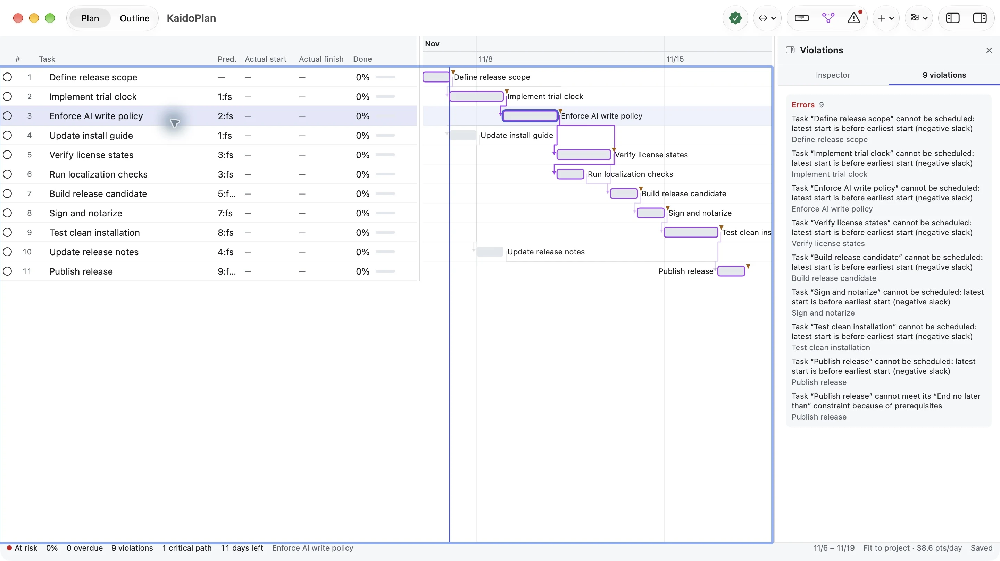

Break the work into a WBS
Tasks, groups and milestones, each with an effort estimate. An agent imports and updates the plan over MCP or the CLI.
Claude Code, Codex and other agents work task by task. KaidoPlan holds the WBS, dependencies and dates in one local plan, and computes the one chain that decides when you actually deliver.
macOS 14+ · 30-day full-feature trial, no account · Local .kaido files

Every AI project management tool already gives you somewhere to keep tasks. What none of them compute is which dependency chain sets your end date — or that a two-day slip upstream just ate your review window. KaidoPlan does the arithmetic a checklist does not.
Tasks, groups and milestones, each with an effort estimate. An agent imports and updates the plan over MCP or the CLI.
Dependencies, constraints and a work calendar produce real dates. The critical path tells you the earliest the project can finish — and which tasks still have slack.
Cycles, dates outside the project window, deadline conflicts and blocked chains turn red in the workbench. Before the slip reaches your client, not after.
An agent reports progress. It rarely reports that the plan stopped adding up. Run the check and the arithmetic comes back in red.
Nothing here is an error in the code the agent wrote. It is an error in the schedule — and it is the kind no chat transcript will tell you about. Example plan. Screens are from the macOS app.
Set the goal, dates and acceptance criteria.
Have AI break down the WBS, connect dependencies and calculate a schedule.
Inspect progress, conflicts and the critical path in the Gantt chart.
AI implements tasks and writes back status as the plan evolves.
The download is a full-feature trial: 30 days, every feature unlocked, no account and no card. When it ends, the app does not stop working — it drops to the free tier below. Nothing you built gets locked, exported off your machine, or deleted.
$0 forever
The whole macOS workbench: WBS, groups and milestones; dependencies, Gantt and critical path; plan validation and progress tracking; local .kaido files with no account.
An AI agent can read your plan over MCP / CLI and answer questions about it — it cannot change it. Delivery-report exports: 3 per month, preview unlimited.
$9.99 / year
AI can write back: task status, actual dates and new tasks through 21 MCP / CLI tools, so the plan updates itself while the agent works. Unlimited delivery-report exports.
The same price on the Mac App Store and as a direct download. Cancel anytime.
14-day refund, no questions asked · Refund policy
Two things: AI write access, and unlimited exports. Everything else stays — your files never leave your machine, the Gantt still opens, reports still preview, and you can keep planning free forever. This is a downgrade, not a switch-off.
No account, ever. The app makes one network call on its own: the update check. Plans live in local .kaido files you can move, copy and back up like any other document.
They are separate purchases, same price: the App Store subscription unlocks Pro in the App Store build, and the license sold here unlocks Pro in the direct download. If you bought one and need the other, email me — I'll move you over instead of charging you twice.
Refund within 14 days, no questions and no exit survey. The refund policy is one page because it only has one rule.
New versions and what changed, one concrete AI workflow, and known issues with fix dates. No promo blasts, no countdowns, unsubscribe in one click.
One command for the app, one for the CLI and MCP server.
brew install --cask cygnusyang/kaidoplan/kaidoplan
brew install cygnusyang/kaidoplan/kaidoplan-cli